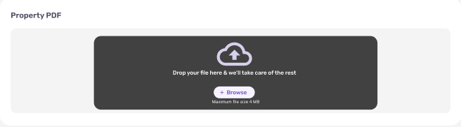
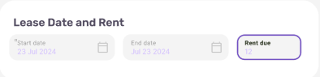
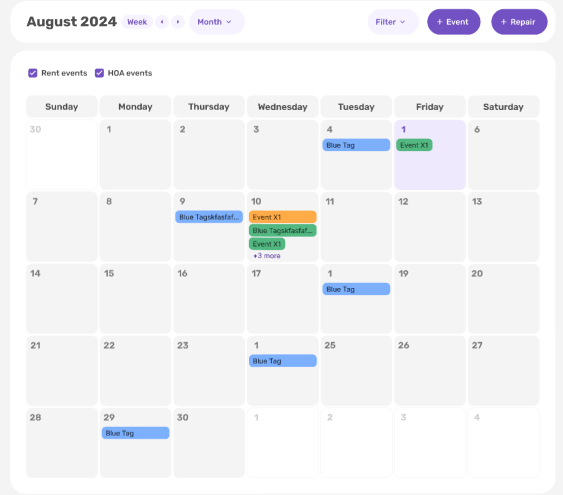
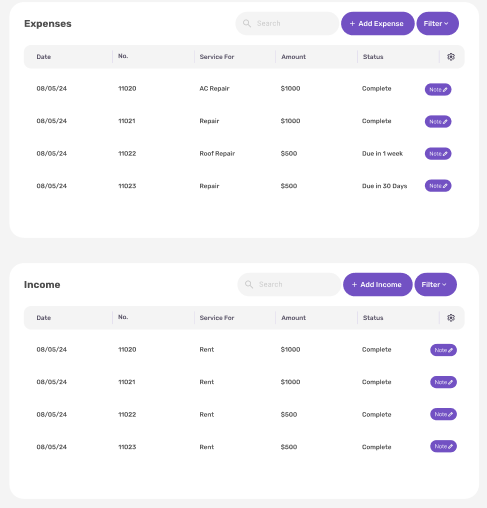
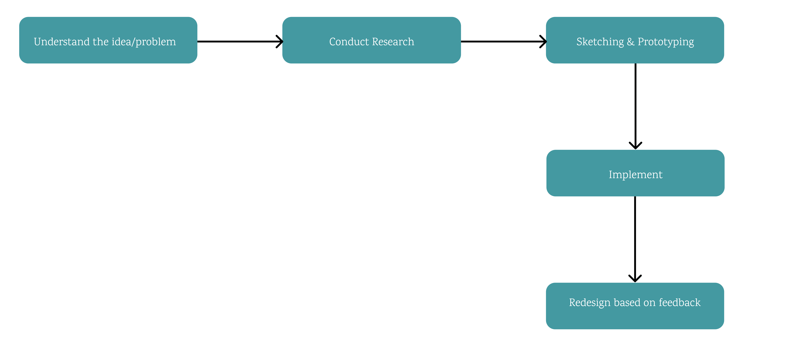

The Process
Propaya
My Role: UX Designer
A property management application that strives to make managing proeprties automated and hassle-free.
July 2024 - Present

Project Overview
Proapaya is a start up and has a minimal team. The CEO of the application is a great friend and had asked me to be apart of the team. My Passion in design comes from creating innovative solultions that can help communities. Therefore, the objetive of the application being able to help property owners inspired me to join the team and help them design the application. Due to the size of our team. Currently with how new our product is, the primary goal is to make an application that can automate lease reading and keep track of important events for Property Managers.
Our Tasks
With how small our team is I am the primary person in charge of all UIUX Design. My daily Tasks are:
Wireframing
I work closely with our Front-End Developer to see ideas come to life. My creative process overview, revolves around having team walkthroughs, making ideas come to life and iterating based on current user feedback.
Tools Used:
Figma, Adobe Illustrator, Webflow
Features I've worked on:
Uploading a PDF and extracting data
This is our primary features where the main function is that a user can upload their PDF whether it's file upload or by Photo and our application is able to read the PDF and auto populate different sections of informaiton for the user. An example field is below which is the lease date and rent information.
This design has taken a lot of iterations as we are consistently updating the types of fields we want to see that would be useful for our users.
Automated Calendar
Another important feature of ours is an Automated Calendar. The main functionality of this feature is to collect important dates and information from leases and then fill out calendar events for the user to keep track of all their dates. A current iteration we are tackling is allowing a user to also create their own events and repair events.
Expenses and Income
A current feature we are implementing slowly but surely is the ability for users to upload pdfs where our application is able to track the user's amount of expenses and income relating to a property. This feature is currently being iterated on based off live user feedback from our current subscriber population.
My Design Process
Because our platform is growing and our subscribers are excited to see new features and changes we are consistently tweaking our current ideas and brainstorming how we want to present our future features. With how fast paced our envionrment of design has been I hold myself accountable to holding a clear and concise design process not only for myself but for our team.
This is my current design process. I first begin by having walkthrough meetings with our team. Through these meetings we either discuss new features that users have expressed wanting to see or features that we must update or change for better user experience. During each of these meetings I take extensive notes about feedback/ideation to begin drafting my design. After these meetings I begin my sketching process, I primarily sketch low fidelity wireframes by hand and when I start iterating my designs I transfer them to Figma. Throughout the entirety of this sketching and prototyping phase I am in consistent communication with our CEO and our Front End Developer about my vision for the design and about what they envision for these ideas. After the sketching and prototyping I shift into fully implementing my ideas in the high fidelity wireframes. After this phase the designs are implemented by the Front End Developer, our subscribers are then introduced to the new features and we get user feedback from these changes. I then repeat the latter process of design iteration.
My Contributions
I am proud of this project, I believe it shows innovative spirit and the hardwork of collaboration and perserverance. I have contributed not only to designing all of the application features but also handling administrative tasks. I am also in charge of outreaching for new hires, creating our weekly newsletters, networking for our platform, and organizing meetings and meeting notes.
The Impact
The idea of the application came from the want of helping people who may have difficulty managing their properties. Our main goal is to be an innovative and useful solution to figures similar to our own family members. I've learned a lot from this experience and I'm still learning from this experience. Being apart of a start up one wears many hats and I have been able to dabble in various fields of work.